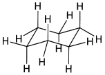
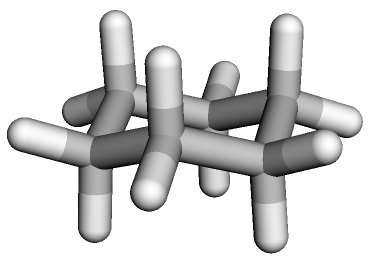

シクロヘキサンの配座｜いす形・舟形とcis/trans 有機化学及び燃料
シクロアルカンとその立体化学次の記述のうち、誤っているものはどれか。

誤っているのは⑤です。trans-1,2-ジメチルシクロヘキサンでは、2つのメチル基がともにエクアトリアル位にあるいす形配座の方が、両方アキシアル位にある配座より安定です。
アキシアル位とエクアトリアル位
シクロヘキサンのいす形配座は、結合角が約109.5°に近く、隣り合う結合がねじれ形になるため安定です。各炭素には、環の軸にほぼ平行に伸びるアキシアル位と、環の外周に向かって伸びるエクアトリアル位が1つずつあります。環は平面ではないため、「エクアトリアル位はすべて同一平面上」とは考えません。①・②は正しい記述です。

環反転で変わる配座と、変わらないcis/trans
環反転ではアキシアル位とエクアトリアル位が入れ替わります。一方、置換基が環のおおよその平面に対して上向きか下向きかは変わりません。2つの置換基が同じ側ならcis、反対側ならtransであり、環反転によってcisとtransが入れ替わることはありません。
| 配置 | 2つのメチル基の位置 | 安定性 |
|---|---|---|
| cis（同じ側） | アキシアル＋エクアトリアル ⇄ エクアトリアル＋アキシアル | 同じメチル基同士なので等価 |
| trans（反対側） | アキシアル＋アキシアル ⇄ エクアトリアル＋エクアトリアル | 両方エクアトリアルが安定 |
cis-1,2体ではどちらの配座にもアキシアルのメチル基が1つあり、環反転で2つのメチル基の役割が入れ替わります。したがって③は正しい記述です。
1,3-ジアキシアル相互作用とは
1位のアキシアル置換基は、同じ側を向く3位・5位のアキシアル水素などに近づき、立体的な反発を受けます。これが1,3-ジアキシアル相互作用です。「1,3」は隣接する1位・2位ではなく、炭素を1つ挟んだ位置関係を表します。
trans-1,2-ジメチルシクロヘキサンの両アキシアル配座では、各メチル基がこの相互作用を受けます。両エクアトリアル配座ではこれを避けられるため、⑤の安定性の比較は逆です。また、舟形配座には重なり形の結合によるねじれひずみなどがあるので、いす形より不安定であり、④は正しい記述です。
位置関係と環反転は、名城大学「シクロヘキサンの立体配座」3～5・8～9ページの構造図で確認できます。